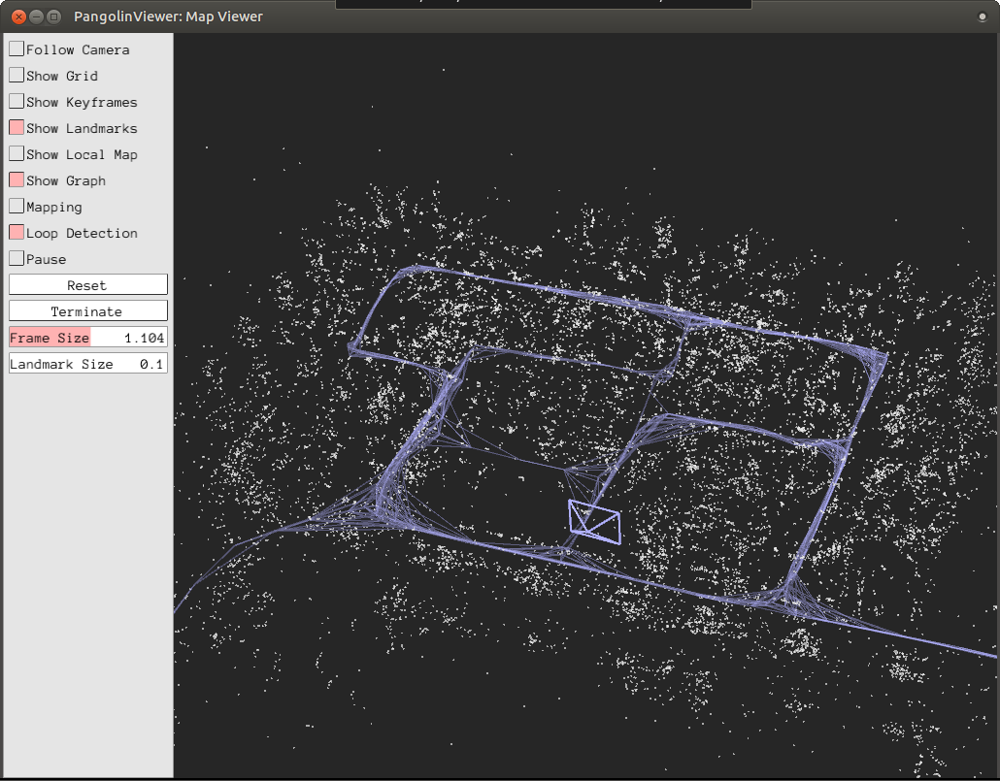

Simple Tutorial
TL; DR
Note
If you use SocketViewer, please launch the server in the other terminal and access to it with the web browser in advance.
Running the following commands will give a feel for what OpenVSLAM can do. The later parts of this chapter explains what each of the commands do in more detail.
# at the build directory of openvslam ...
$ pwd
/path/to/openvslam/build/
$ ls
run_video_slam run_video_localization lib/ ...
# download an ORB vocabulary from Google Drive
FILE_ID="1wUPb328th8bUqhOk-i8xllt5mgRW4n84"
curl -sc /tmp/cookie "https://drive.google.com/uc?export=download&id=${FILE_ID}" > /dev/null
CODE="$(awk '/_warning_/ {print $NF}' /tmp/cookie)"
curl -sLb /tmp/cookie "https://drive.google.com/uc?export=download&confirm=${CODE}&id=${FILE_ID}" -o orb_vocab.zip
unzip orb_vocab.zip
# download a sample dataset from Google Drive
FILE_ID="1d8kADKWBptEqTF7jEVhKatBEdN7g0ikY"
curl -sc /tmp/cookie "https://drive.google.com/uc?export=download&id=${FILE_ID}" > /dev/null
CODE="$(awk '/_warning_/ {print $NF}' /tmp/cookie)"
curl -sLb /tmp/cookie "https://drive.google.com/uc?export=download&confirm=${CODE}&id=${FILE_ID}" -o aist_living_lab_1.zip
unzip aist_living_lab_1.zip
# download a sample dataset from Google Drive
FILE_ID="1TVf2D2QvMZPHsFoTb7HNxbXclPoFMGLX"
curl -sc /tmp/cookie "https://drive.google.com/uc?export=download&id=${FILE_ID}" > /dev/null
CODE="$(awk '/_warning_/ {print $NF}' /tmp/cookie)"
curl -sLb /tmp/cookie "https://drive.google.com/uc?export=download&confirm=${CODE}&id=${FILE_ID}" -o aist_living_lab_2.zip
unzip aist_living_lab_2.zip
# run tracking and mapping
./run_video_slam -v ./orb_vocab/orb_vocab.dbow2 -m ./aist_living_lab_1/video.mp4 -c ./aist_living_lab_1/config.yaml --frame-skip 3 --no-sleep --map-db map.msg
# click the [Terminate] button to close the viewer
# you can find map.msg in the current directory
# run localization
./run_video_localization -v ./orb_vocab/orb_vocab.dbow2 -m ./aist_living_lab_2/video.mp4 -c ./aist_living_lab_2/config.yaml --frame-skip 3 --no-sleep --map-db map.msg
Sample Datasets
You can use OpenVSLAM with various video datasets. If you want to run OpenVSLAM with standard benchmarking detasets, please see this section.
Start by downloading some datasets you like.
Equirectangular Datasets
name |
camera model |
length |
download link |
|---|---|---|---|
aist_entrance_hall_1 |
equirectangular (mono) |
0:54 |
|
aist_entrance_hall_2 |
equirectangular (mono) |
0:54 |
|
aist_factory_A_1 |
equirectangular (mono) |
1:55 |
|
aist_factory_A_2 |
equirectangular (mono) |
1:54 |
|
aist_factory_B_1 |
equirectangular (mono) |
1:04 |
|
aist_factory_B_2 |
equirectangular (mono) |
1:34 |
|
aist_living_lab_1 |
equirectangular (mono) |
2:16 |
|
aist_living_lab_2 |
equirectangular (mono) |
1:47 |
|
aist_living_lab_3 |
equirectangular (mono) |
2:06 |
|
aist_stairs_A_1 |
equirectangular (mono) |
2:27 |
|
aist_stairs_B_1 |
equirectangular (mono) |
2:55 |
|
aist_store_1 |
equirectangular (mono) |
1:12 |
|
aist_store_2 |
equirectangular (mono) |
1:44 |
|
aist_store_3 |
equirectangular (mono) |
1:18 |
Fisheye Datasets
name |
camera model |
length |
download link |
|---|---|---|---|
aist_entrance_hall_1 |
fisheye (mono) |
1:05 |
|
aist_entrance_hall_2 |
fisheye (mono) |
1:06 |
|
aist_entrance_hall_3 |
fisheye (mono) |
1:23 |
|
aist_entrance_hall_4 |
fisheye (mono) |
1:27 |
|
aist_living_lab_1 |
fisheye (mono) |
1:20 |
|
aist_living_lab_2 |
fisheye (mono) |
2:26 |
|
aist_living_lab_3 |
fisheye (mono) |
3:43 |
|
nu_eng2_corridor_1 |
fisheye (mono) |
2:56 |
|
nu_eng2_corridor_2 |
fisheye (mono) |
2:45 |
|
nu_eng2_corridor_3 |
fisheye (mono) |
2:04 |
After downloading and uncompressing a zip file, you will find a video file and a config file under the uncompressed directory.
$ ls dataset_name_X/
config.yaml video.mp4
You can put the dataset in any directory where you have access to.
orb_vocab.dbow2.For the rest of this chapter, we will use aist_living_lab_1 and aist_living_lab_2 datasets for our example.
Tracking and Mapping
Here we should know how to run SLAM and create a map database file with aist_living_lab_1 dataset.
You can use ./run_video_slam to run SLAM with the video file.
# at the build directory of OpenVSLAM
$ ls
...
run_video_slam
...
$ ./run_video_slam -h
Allowed options:
-h, --help produce help message
-v, --vocab arg vocabulary file path
-m, --video arg video file path
-c, --config arg config file path
--mask arg mask image path
--frame-skip arg (=1) interval of frame skip
--no-sleep not wait for next frame in real time
--auto-term automatically terminate the viewer
--debug debug mode
--eval-log store trajectory and tracking times for evaluation
-p, --map-db arg store a map database at this path after SLAM
Execute the following command to run SLAM. The paths should be changed accordingly.
$ ./run_video_slam \
-v /path/to/orb_vocab/orb_vocab.dbow2 \
-c /path/to/aist_living_lab_1/config.yaml \
-m /path/to/aist_living_lab_1/video.mp4 \
--frame-skip 3 \
--map-db aist_living_lab_1_map.msg
The frame viewer and map viewer should launch as well. If the two viewers are not launching correctly, check if you launched the command with the appropriate paths.
Note
If OpenVSLAM terminates abnormaly soon after initialization, rebuild g2o and OpenVSLAM with -DBUILD_WITH_MARCH_NATIVE=OFF option for cmake configulation.
{kind=link}
{kind=link}
[2019-05-20 17:52:41.677] [I] config file loaded: /path/to/aist_living_lab_1/aist_living_lab_1/config.yaml
___ __ _____ _ _ __ __
/ _ \ _ __ ___ _ _\ \ / / __| | /_\ | \/ |
| (_) | '_ \/ -_) ' \\ V /\__ \ |__ / _ \| |\/| |
\___/| .__/\___|_||_|\_/ |___/____/_/ \_\_| |_|
|_|
Copyright (C) 2019,
National Institute of Advanced Industrial Science and Technology (AIST)
All rights reserved.
This is free software,
and you are welcome to redistribute it under certain conditions.
See the LICENSE file.
Camera Configuration:
- name: RICOH THETA S 960
- setup: Monocular
- fps: 30
- cols: 1920
- rows: 960
- color: RGB
- model: Equirectangular
ORB Configuration:
- number of keypoints: 2000
- scale factor: 1.2
- number of levels: 8
- initial fast threshold: 20
- minimum fast threshold: 7
- edge threshold: 19
- patch size: 31
- half patch size: 15
- mask rectangles:
- [0, 1, 0, 0.1]
- [0, 1, 0.84, 1]
- [0, 0.2, 0.7, 1]
- [0.8, 1, 0.7, 1]
Tracking Configuration:
[2019-05-20 17:52:41.678] [I] loading ORB vocabulary: /path/to/orb_vocab/orb_vocab.dbow2
[2019-05-20 17:52:42.037] [I] startup SLAM system
[2019-05-20 17:52:42.038] [I] start local mapper
[2019-05-20 17:52:42.038] [I] start loop closer
[2019-05-20 17:52:42.395] [I] initialization succeeded with E
[2019-05-20 17:52:42.424] [I] new map created with 191 points: frame 0 - frame 2
[2019-05-20 17:53:39.092] [I] detect loop: keyframe 36 - keyframe 139
[2019-05-20 17:53:39.094] [I] pause local mapper
[2019-05-20 17:53:39.303] [I] resume local mapper
[2019-05-20 17:53:39.303] [I] start loop bundle adjustment
[2019-05-20 17:53:40.186] [I] finish loop bundle adjustment
[2019-05-20 17:53:40.186] [I] updating map with pose propagation
[2019-05-20 17:53:40.194] [I] pause local mapper
[2019-05-20 17:53:40.199] [I] resume local mapper
[2019-05-20 17:53:40.199] [I] updated map
[2019-05-20 17:55:36.218] [I] shutdown SLAM system
[2019-05-20 17:55:36.218] [I] encoding 1 camera(s) to store
[2019-05-20 17:55:36.218] [I] encoding 301 keyframes to store
[2019-05-20 17:55:37.906] [I] encoding 19900 landmarks to store
[2019-05-20 17:55:38.819] [I] save the MessagePack file of database to aist_living_lab_1_map.msg
median tracking time: 0.045391[s]
mean tracking time: 0.0472221[s]
[2019-05-20 17:55:40.087] [I] clear BoW database
[2019-05-20 17:55:40.284] [I] clear map database
Please click the Terminate button to close the viewer.
After terminating, you will find a map database file aist_living_lab_1_map.msg.
$ ls
...
aist_living_lab_1_map.msg
...
The format of map database files is MessagePack, so you can reuse created maps for any third-party applications other than OpenVSLAM.
Localization
In this section, we will localize the frames in aist_living_lab_2 dataset using the created map file aist_living_lab_1_map.msg.
You can use ./run_video_localization to run localization.
$ ./run_video_localization -h
Allowed options:
-h, --help produce help message
-v, --vocab arg vocabulary file path
-m, --video arg video file path
-c, --config arg config file path
-p, --map-db arg path to a prebuilt map database
--mapping perform mapping as well as localization
--mask arg mask image path
--frame-skip arg (=1) interval of frame skip
--no-sleep not wait for next frame in real time
--auto-term automatically terminate the viewer
--debug debug mode
Execute the following command to start localization. The paths should be changed accordingly.
$ ./run_video_localization \
-v /path/to/orb_vocab/orb_vocab.dbow2 \
-c /path/to/aist_living_lab_2/config.yaml \
-m /path/to/aist_living_lab_2/video.mp4 \
--frame-skip 3 \
--map-db aist_living_lab_1_map.msg
The frame viewer and map viewer should launch as well. If the two viewers are not launching correctly, check if you launched the command with the appropriate paths.
You can see if the current frame is being localized, based on the prebuild map.
{kind=link}
[2019-05-20 17:58:54.728] [I] config file loaded: /path/to/aist_living_lab_2/config.yaml
___ __ _____ _ _ __ __
/ _ \ _ __ ___ _ _\ \ / / __| | /_\ | \/ |
| (_) | '_ \/ -_) ' \\ V /\__ \ |__ / _ \| |\/| |
\___/| .__/\___|_||_|\_/ |___/____/_/ \_\_| |_|
|_|
Copyright (C) 2019,
National Institute of Advanced Industrial Science and Technology (AIST)
All rights reserved.
This is free software,
and you are welcome to redistribute it under certain conditions.
See the LICENSE file.
Camera Configuration:
- name: RICOH THETA S 960
- setup: Monocular
- fps: 30
- cols: 1920
- rows: 960
- color: RGB
- model: Equirectangular
ORB Configuration:
- number of keypoints: 2000
- scale factor: 1.2
- number of levels: 8
- initial fast threshold: 20
- minimum fast threshold: 7
- edge threshold: 19
- patch size: 31
- half patch size: 15
- mask rectangles:
- [0, 1, 0, 0.1]
- [0, 1, 0.84, 1]
- [0, 0.2, 0.7, 1]
- [0.8, 1, 0.7, 1]
Tracking Configuration:
[2019-05-20 17:58:54.729] [I] loading ORB vocabulary: /path/to/orb_vocab/orb_vocab.dbow2
[2019-05-20 17:58:55.083] [I] clear map database
[2019-05-20 17:58:55.083] [I] clear BoW database
[2019-05-20 17:58:55.083] [I] load the MessagePack file of database from aist_living_lab_1_map.msg
[2019-05-20 17:58:57.832] [I] decoding 1 camera(s) to load
[2019-05-20 17:58:57.832] [I] load the tracking camera "RICOH THETA S 960" from JSON
[2019-05-20 17:58:58.204] [I] decoding 301 keyframes to load
[2019-05-20 17:59:02.013] [I] decoding 19900 landmarks to load
[2019-05-20 17:59:02.036] [I] registering essential graph
[2019-05-20 17:59:02.564] [I] registering keyframe-landmark association
[2019-05-20 17:59:03.161] [I] updating covisibility graph
[2019-05-20 17:59:03.341] [I] updating landmark geometry
[2019-05-20 17:59:04.189] [I] startup SLAM system
[2019-05-20 17:59:04.190] [I] start local mapper
[2019-05-20 17:59:04.191] [I] start loop closer
[2019-05-20 17:59:04.195] [I] pause local mapper
[2019-05-20 17:59:04.424] [I] relocalization succeeded
[2019-05-20 18:01:12.387] [I] shutdown SLAM system
median tracking time: 0.0370831[s]
mean tracking time: 0.0384683[s]
[2019-05-20 18:01:12.390] [I] clear BoW database
[2019-05-20 18:01:12.574] [I] clear map database
If you set the --mapping option, the mapping module is enabled to extend the prebuild map.